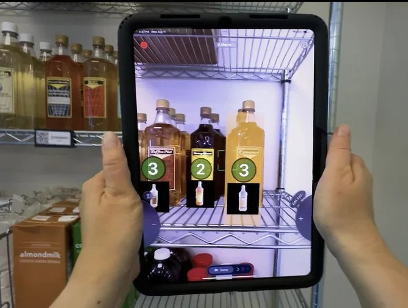

Chapter 2 · The Value of Information
The Value of Information: How Starbucks Turned Coffee Into a Data Business
A company that sells a four-dollar drink built one of the most valuable customer datasets in retail. This chapter asks the question the whole course rests on: when is information actually worth money, and when is it just expensive?
A company that sells a four-dollar drink built one of the most valuable customer datasets in retail. Before you can judge whether that was smart, you need a way to say what information is actually worth.
Sections 01 to 04 are the concepts. Section 05 puts them to work on three short cases, each with a question you can answer from the reading. Section 06 is the full case, Starbucks, and the discussion questions at the end all come from it.
Jump to the Starbucks case → Jump to the discussion questions →
01Data, information, knowledge, wisdom
Chapter 1 defined an information system as hardware, software, data, networks, and people working together to collect information and act on it. This chapter is about what makes that information worth collecting. Start with four terms that get used interchangeably almost everywhere and mean different things here.
Four levels, each built from the one below it, and each one costs more to produce and is worth more once you have it.
- Data. A raw recorded fact with nothing attached: 62.
- Information. Data placed in context until it means something: 62 points on the midterm.
- Knowledge. Information joined with experience about what it implies: that is a low score for this class, and low scores predict trouble in the final.
- Wisdom. Knowing what to do about it, and whether to act at all: I should change how I study.
Two things move you up the pyramid, and they are worth naming because you will be doing both all quarter. The first is connectedness: 62 becomes information only when it is connected to something else, a student, an exam, a scale. A number alone means nothing, and most of the work of a database, which you will meet in Week 7, is connecting facts to other facts. The second is usefulness: each level is more useful than the last, because it is closer to somebody being able to do something.
It also runs backwards, which surprises people. Reaching the knowledge level usually reveals that you need data you do not have. You conclude that low midterm scores predict trouble, and immediately want to know which topics students missed, which sends you back down to collect more. Real analysis is a loop, not a straight climb upward.
02Information and decisions
Before the uses, place this in the framework from Chapter 1. Information is what the data component becomes once somebody has done something to it. Doing something to it takes the other four: hardware to capture the fact, software to hold the rules, networks to move it to whoever needs it, and people to ask a question worth answering. That last component is what this chapter is really about. A company can own perfect data on excellent hardware and produce nothing from it, because nobody asked it anything.
Keep the weakest component rule in view as you read. A number that is accurate, complete and consistent, and that arrives on Thursday for a decision made on Tuesday, is worth nothing, and quality in the other four components does not rescue it. Information quality is not a property of the data alone. It is a property of the whole system, measured at the moment somebody has to decide.
Businesses use information for three things: communication, telling people what happened; process support, keeping the ordinary work running, which Chapter 4 takes up in detail; and decision making, choosing among courses of action. This chapter is about the third, because that is where the question of value gets settled. Information that changes no decision has no value, and to see whether a decision changed you first have to know what kind of decision it was.
Companies make three kinds, and they need different information:
A company decides at three altitudes. Each level needs different information at a different amount of detail, which is why one report cannot serve everyone.
- Level 1, operational. Runs the day. These repeat constantly, follow rules, and are made by frontline staff or by software: how many people on shift Tuesday morning, when to reorder supplies. They need current, detailed information about right now.
- Level 2, managerial. Runs the quarter. These recur on a cycle and are made by managers reading summaries: which locations are underperforming, whether a promotion earned back its cost. They need comparisons over time.
- Level 3, strategic. Sets direction. These are rare, expensive to reverse, and made at the top: what business to be in, whether to build something new. They need broad information about years and markets, and they are never decided by information alone.
They are called levels because they sit at different altitudes in the organization, not because one is built from the one below it. That is worth keeping separate from the DIKW hierarchy, where each level is made out of the last. Decision levels are three vantage points on the same business. What moves between them runs both ways. Data flows up, getting summarized at every step. Decisions flow down: a strategic choice sets the boundaries the managerial level works inside, and those set the boundaries the operational level works inside.
The same fact is also worth different amounts at each level. Yesterday’s sales at one store is essential to the store manager and meaningless to the executive; five years of category trends is the reverse. One report cannot serve everyone, which is the practical reason companies build more than one system.
Decisions also differ in whether anyone knows how to make them:
- Structured. There is a known procedure. Given a sales forecast, a scheduling formula produces the staffing plan, and software can run it without a human.
- Unstructured decisions. There is no formula. Should a company bet its menu on cold drinks? Information can inform that decision; judgment has to make it.
- Semi-structured. Most real decisions. Part procedure, part judgment, which is why most systems are built to support a person rather than replace one.
Run one situation through all three to see the difference. A store is short-staffed on Thursday afternoon. Structured: the scheduling system finds who is available, ranks them by hours already worked this week, and sends the shift offer. No human needed, and no judgment involved. Semi-structured: nobody accepts, so a manager decides whether to close the drive-through for two hours or run the store with too few staff. The system can show her yesterday’s traffic by hour and what each choice cost the last three times; she picks. Unstructured: this is the fourth Thursday in a row it has happened, and the real question is whether this store is understaffed by design, which is a question about pay, scheduling policy, and what the company wants its stores to feel like. No report answers that one.
Semi-structured decisions are where the current argument about AI is happening. Software has handled structured decisions for decades; the scheduling formula is not new. What is new is that AI systems now take on the middle category, and increasingly act on their own. An agentic system is given a goal rather than a script. It decides which steps to take, pulls information from wherever it can reach, and acts. Chapter 4 and Chapter 9 go into how that works.
For this chapter, what matters is what automation does to the value of information. When a person decides, bad information usually gets caught, because people notice when a number looks wrong. When a system decides and acts in the same second, nothing pauses to notice, and a wrong number becomes a wrong action at the speed of the network. The more decisions a company automates, the more its outcomes rest on information nobody checked. That is why the phrase human in the loop keeps returning: somebody has to stay in a position to catch what the system cannot. Deciding where that person stands, and which decisions never get automated at all, is a management decision, and one you will be asked to make.
03The value test
All of that leads to the question this chapter exists to answer. A company can collect almost anything. Storage is cheap, sensors are everywhere, and every system a business runs produces records as it goes. So how does anyone decide what is worth collecting, keeping, and paying attention to?
Information has business value only when it could change a decision. Not when it is interesting, not when it is accurate, not when it took effort to collect: when some person or system would act differently because of it. And the change has to be worth more than the information costs to produce. Throughout this course, when you meet any information system, ask the same question first: what decision does this change? If the honest answer is none, the system is expensive decoration, and companies build expensive decoration constantly.
The test sorts data that looks equally collectible into things worth having and things that are not. Take a coffee chain. Knowing the weather at every store is worth money, because weather changes what people drink, which changes what to staff and stock that morning. Logging every shot the espresso machines pull is worth money, because that data predicts a machine failing, and a machine that dies mid-rush wrecks the store’s whole day. Knowing what share of customers wear hats is worth nothing. It is just as easy to collect, and just as accurate, and no decision anywhere in the company depends on it. You will meet all three of those again in section 06.
Six things your university could record about you as a student. Every one is easy to collect and would be perfectly accurate. Decide about each one before you see the answer.
Nothing here sorts by how easy or how accurate the data is. Every row is both. Work through all six and see what actually separates them.
One question remains before the cases: where does valuable information come from in the first place? Rarely from asking people. Almost always from recording what they were already doing.
The richest business data is usually generated as a side effect of an activity done for other reasons. Nobody fills out a survey about their coffee habits; the habits record themselves in the act of ordering. Data produced this way is cheap, honest (people lie on surveys, not at checkout), and continuous. When you evaluate any digital product this quarter, ask what by-product data it generates and who captures it. Free products, in particular, are usually paid for this way.
04Too much, and not good enough
Everything so far assumes information is scarce and you are deciding what to go and collect. For most of business history that was true. It is not true now, and the reversal is recent enough that most organizations have not adjusted to it.
Cloud computing is what changed. When storage and computing had to be bought, installed, and maintained in a building you owned, collecting data had an obvious cost, and somebody had to justify it. Renting storage by the hour removed that check. It is now cheaper for most companies to keep everything than to spend a meeting deciding what to discard. So they keep everything.
The numbers are hard to picture. The world created and captured something like 149 zettabytes of data in 2024 and roughly 181 zettabytes in 2025, and the total is forecast to more than double again within a few years. A zettabyte is a trillion gigabytes. Global volume has been doubling roughly every four years.
All of it has to physically live somewhere, which is why data centers are the largest construction story in business right now. Worldwide spending on data center systems sat between roughly $140 billion and $236 billion for over a decade, then jumped to a forecast $582 billion in 2026. The four largest cloud companies alone have signaled something on the order of $400 billion of data center investment in 2026. Most of that is driven by AI, which needs enormous computing to train and run models, but AI is not the only reason. The other reason is that everything now records itself, and all of it is kept.
Here is the number that matters for this chapter. Estimates of how much of the world’s data is ever actually analyzed run around two to three percent. The rest is stored, powered, cooled, backed up, secured, and never looked at. Every byte of it costs money, and most of it changes no decision.
The constraint has moved. Twenty years ago the hard problem was getting data. Today the hard problems are deciding what is worth keeping, finding the small part that matters, and knowing whether to trust it. The value test did not become less important when data got cheap. It became the only thing standing between a company and an expensive warehouse of numbers nobody reads.
So the amount of information a company holds stopped being the interesting question. Two things decide whether any of it is worth having: how much of it there is, and whether anyone can trust it. Start with how much.
Value does not rise forever with volume. Too little information leaves you unable to act: you can see a fire on the ridge and still not know whether to leave, which is mini-case 3 below. Too much looks like careful work and often is not. A dashboard with forty numbers hides the one that matters, and gathering more before deciding is itself a decision, usually the wrong one. Each additional piece costs something to collect, clean, store, and read, while the improvement it buys keeps shrinking. Past some point you are paying more for the information than the better decision is worth.
Volume is only half of it. Information that could change a decision changes nothing if the people who would have to act on it do not believe it, and trust is not a feeling. It breaks down into things you can check.
Information changes decisions only if the people who would act on it trust it, and trust breaks into five dimensions you can check one at a time. A failure on any single dimension can cancel the value of the other four.
| Dimension | The question | What it looks like when it fails |
|---|---|---|
| Accuracy | Is it correct? | A shelf count says twelve cartons and there are seven. Now somebody has to check every count by hand. |
| Completeness | Is anything missing? | The survey went only to people still using the app, so the customers who left are invisible. |
| Timeliness | Does it arrive while the decision is still open? | Tuesday’s staffing report lands Thursday. Every number in it is right and worth nothing. |
| Consistency | Does it agree with itself across systems? | Sales says 4,812 orders, finance says 4,779. One may be right, nobody knows which, so neither gets used. |
| Relevance | Is it related to this decision at all? | A perfect report on how many customers wore hats. Four dimensions clean, and still worthless. |
Notice that only the first one is about numbers being wrong. The other four leave the numbers perfectly correct and still make them useless, which is why "is the data accurate?" is not the same question as "can we act on this?"
Five more situations, without the answers attached. Name the dimension that failed before you check.
Quality is the dimension companies most often assume they have. It is worth being able to name which one broke, because the fix is different for each.
05Three small cases
Those are the ideas. The rest of this chapter puts them to work, starting with three short cases separated by four and a half thousand years: a shipping log from the age of the pyramids, a hand-drawn map from Victorian London, and a phone screen from this August. As you read each one, hold the same four questions: what was the data, what turned it into information, what decision changed, and what was that worth?
Mini-case 1 · 2500 BCE: the oldest business record we have
In 2013 a French team digging at Wadi al-Jarf, an abandoned harbor on Egypt’s Red Sea coast, found rolls of papyrus wedged between rocks at the mouth of a cave. They are the oldest inscribed papyri ever recovered, roughly 4,500 years old, from the twenty-sixth year of the reign of Khufu, the pharaoh who built the Great Pyramid.
Given the odds against anything surviving that long, you might hope for something momentous. What they found was a logbook. An official named Merer, a mid-level inspector running a crew of about two hundred men, kept a daily record of hauling white limestone by boat from the quarries at Tura to the building site at Giza. Two or three round trips per ten-day week. Dates, cargo, crew, destination. It is a shipping manifest.
The diary of Merer, days 19 to 25, read right to left, at the Wadi al-Jarf exhibition, Egyptian Museum, Cairo, 2016. Via History Today, Monumental Record.
Nobody wrote it for us. It was operational paperwork, kept so that somebody upstream could answer ordinary questions: where are the boats, how much stone has moved, is the crew on schedule. It was useful for a few months and then abandoned in a cave when the harbor closed.
Four and a half thousand years later it is the best direct evidence anybody has of how the Great Pyramid was actually built. That is the value of information doing something nobody planned: a record kept to settle a scheduling question became, much later, the answer to a question its author never thought to ask. You will see the same pattern in this chapter with a coffee company, and again in Week 7 with a retailer. Somebody records what happened because they have to. Somebody else, later, finds out what it is worth.
The concept: data becomes information when somebody asks it a question. The component: data. Merer had no hardware worth the name, no software and no network. He had a recording habit and a papyrus, which is enough to make the point that data is the component you accumulate rather than buy, and that its value is decided long after the recording.
Mini-case 2 · 1854: the pump on Broad Street
In the late summer of 1854, cholera tore through the Soho district of London, killing hundreds of people in a few square blocks. The era's medical consensus blamed miasma, bad air rising from filth, and against bad air there is not much a neighborhood can decide to do. A physician named John Snow suspected the disease traveled in water, and he did something that now looks obvious and then was radical: he collected the addresses of the dead and drew them on a street map, each death a black mark.
The marks piled up around a single public water pump on Broad Street. Data became information: not "many people are dying," which everyone knew, but "the deaths cluster around this pump," which nobody could see until it was drawn. Snow took the map to the parish board and persuaded them to remove the pump's handle. The decision was cheap, specific, and only possible because the information existed in a form a committee could grasp in one look.

John Snow, from On the Mode of Communication of Cholera, second edition, 1855. Lithograph by C. F. Cheffins, London. Public domain.
The detail worth carrying into your labs is what Snow did with the exceptions. A brewery sat near the pump, and its workers were mysteriously spared; it turned out they drank the beer, brewed with its own water supply. A widow in Hampstead, miles away, died of the same outbreak; it turned out she had liked the Broad Street water's taste so much she had it delivered. The anomalies did not weaken the pattern. Investigated properly, they confirmed it, because each exception had the water, not the air, running through it. Learning to chase the observation that does not fit, rather than discard it, is the single most transferable habit in this book, and it is precisely what your Cascadia labs will ask of you.
The concept: information has value only when it changes a decision. The component: people. The deaths were already recorded and the addresses were already known. What Snow added was the question, and then the argument that removed the pump handle. No component but people supplies either of those.
Mini-case 3 · 2026: the fire on the ridge
Both of those cases are old enough to feel safe. Here is one from this August.
On the afternoon of Saturday 22 August 2026, a fire started in the hills northwest of Reno, Nevada. It moved about four miles in three hours. By Monday it had burned more than fifteen thousand acres, destroyed dozens of homes, and put tens of thousands of people under evacuation orders or warnings. Prof. Califf’s father lives in Reno, a few miles from where the orders were drawn.
From his window you could see the fire. That is a vivid piece of raw data and it is almost useless. An orange glow on a ridge tells you something is burning somewhere in that direction. It does not tell you how far away it is, which way it is moving, how fast, or whether the street you live on is inside the line. You cannot make a decision with it. You can only be frightened by it.
What he had instead was a map on his phone. Not a picture of the fire: a set of shaded zones drawn over the streets he knew, updated as new information came in. Red meant leave now. Yellow meant be ready to. Everything else meant stay put and stop refreshing. And a blue dot showed him where he was standing relative to all of it.
![A phone screenshot of an evacuation map during the Hawk Fire, taken at 10:54 at night. The burned
area is a solid red shape near the center. Around it, a large region is shaded red and labeled
repeatedly Evacuation Area, GO NOW. Beyond that, a band of yellow zones is labeled Evacuation Warning,
GET SET. Road closure symbols sit along the highway running through the red zone. Reno is labeled to the
right, outside both bands. A blue dot marking the viewer's own location sits south east of the shaded
areas, near Caughlin Ranch, outside every zone.](hawk-fire-perimeter-map.png)
Screenshot taken during the Hawk Fire, August 2026. Perimeter Map, base map by Mapbox.
Compared to a wall of flame at dusk it is an unremarkable picture. It is also the only one of the two that answers a question. He was outside every zone and the fire was not growing his way. So he stayed.
The obvious argument for that map is that it saves the people who would otherwise not know to leave. The better argument runs the other way. Without it, everybody with a view of the ridge leaves at once. The roads out of a metropolitan area fill with a hundred thousand people who were never in danger, and the ones who had to move cannot get through. Most of what that map did on that Saturday was tell the overwhelming majority of Reno to stay exactly where they were, which is worth more than it sounds and is invisible if it works.
The fire map is the same move as Snow’s map, a hundred and seventy years later and on a phone. Somebody collected observations, aircraft tracks and satellite passes and crews on the ground, and put them in a form a frightened person could read in one look. Data became information at the moment it was drawn over a street he recognized.
It is worth saying plainly that this one was not a clean win. One woman, eighty-three years old, died of injuries from the fire. Better information does not mean everybody gets out, and a map on a phone only helps the people who have the phone, the signal, and the habit of checking. Which is the beginning of a much harder question that this course comes back to in Week 9: who does a system reach, and who does it quietly leave out?
Hold all three against the case that follows and notice that nothing essential has changed. What Starbucks runs is Snow’s map with the marks arriving a hundred million times a week: observations, placed in context, until a pattern demands a decision. The technology multiplied the volume and the speed. The logic of why the information is worth anything, that it changed what someone did next, is the same logic that took the handle off a pump.
The concept: timeliness, and too much information. The component: networks. Every fact a resident needed existed somewhere on the night of the fire. What decided whether it reached them in time to act was the network carrying it, which is the component nobody thinks about until it is the only one that matters.
06Starbucks: information as the product
The company
Starbucks opened as a single Seattle coffee bean shop in 1971 and now operates roughly 40,000 stores across more than 80 markets. For most of its history, the company's story was about the product and the place: good coffee, and a "third place" between home and work where people wanted to sit. That story is still on the cups. It is no longer the story of the business.

Photograph via Wikimedia Commons.
The modern Starbucks runs on a different asset. Its Rewards program counts about 34.2 million active U.S. members as of late 2025, and those members account for roughly 60 percent of company-operated U.S. revenue, more than $13 billion in annual spend. Mobile Order & Pay handles over 35 percent of U.S. transactions. Behind that sits an analytics platform the company calls Deep Brew, which processes on the order of 100 million transactions a week.
Read those numbers again as an exchange. Members hand Starbucks a complete record of what they buy, when, where, and how often. In return they get free drinks, shorter lines, and offers built for them personally. Starbucks is not unusually generous; it has concluded that the information is worth more than the free coffee costs. Whether that conclusion is right, and how a company could possibly know, is this chapter.
Every system you will study this quarter, from Zara's logistics to Target's breach, exists because some company decided certain information was worth acquiring, storing, and acting on. Starbucks is the cleanest version of that decision: a physical product with thin margins, where the information layer on top of it became the growth engine. If you can explain why a coffee company employs data scientists, you understand what this course is about.
Three levels, one pool of data
Map Starbucks onto the three levels.
- Level 1, operational. Software decides what order drinks get made in and how many people to put on shift, based on how busy the store is predicted to be. The company’s SmartQueue system, in test locations, got about 80 percent of cafe orders handed off in under four minutes.
- Level 2, managerial. Store comparisons and promotion analyses decide where attention goes: which locations are underperforming, whether an offer earned back what it cost.
- Level 3, strategic. The data changed the menu itself. Cold beverages reached about 78 percent of U.S. beverage sales in 2025, a fact visible only in aggregate, and in February 2025 the company cut roughly 30 percent of menu items to simplify operations around what people actually buy.
Notice what that last example means: the same underlying transaction records served all three levels. The barista's queue, the district manager's store report, and the CEO's menu decision drew on one shared pool of data, summarized in three different amounts of detail. That is what "management information system" means in practice, and it is why data quality problems at the bottom poison decisions all the way up. Note which word does the work there. Nothing in that arrangement is a technical achievement. It is a set of management decisions about what to measure, who sees which version of it, and what each level is allowed to decide on the strength of it.
What the app is actually for: data
None of this works without knowing who is buying. Here is a cash sale at the register, as the system records it.
| store | time | item | size | price | customer |
|---|---|---|---|---|---|
| 412 | 2026-02-17 08:14 | Latte | Grande | 5.45 | — |
That row is worth something. It tells the company that store 412 sold a grande latte on a Tuesday morning, which is enough to reorder milk and staff the shift. It is a perfectly good operational record and it is useless for anything else, because the last column is empty. You cannot tell whether that customer came yesterday, whether she will come tomorrow, or whether she is the same person who bought one every weekday for two years and then stopped. The individual, the unit personalization needs, is invisible in cash.
This is the problem the app was built to solve, and it is worth being precise about the trade, because it is the same trade behind almost every free or convenient digital service you use. The customer gets real value: order ahead, skip the line, save a favorite drink, earn stars toward a free one. The company gets something it could not buy at any price, which is a name attached to every purchase. Nobody is being tricked. Both sides get what they came for, and only one side gets an asset that compounds.
Here is the same visit, and the two mornings after it, once it runs through the app.
| member | store | time | item | customization | channel | price | stars |
|---|---|---|---|---|---|---|---|
| m_88213 | 412 | 2026-02-17 08:14 | Grande latte | oat milk, extra shot | mobile order | 6.25 | 13 |
| m_88213 | 412 | 2026-02-18 08:09 | Grande latte | oat milk, extra shot | mobile order | 6.25 | 13 |
| m_88213 | 412 | 2026-02-19 08:11 | Grande latte | oat milk, extra shot | mobile order | 6.25 | 13 |
| m_88213 | 109 | 2026-02-21 14:32 | Venti cold brew | — | in store | 5.75 | 12 |
| m_88213 | 412 | 2026-02-24 08:07 | Grande latte | oat milk, extra shot | mobile order | 6.25 | 13 |
One column changed, and everything downstream of it changed with it. Any single row here is still just data: somebody bought a latte. But because the rows can now be connected to each other, a pattern appears that no single row contains. Same member, same store, same drink, three mornings running, all before half past eight. That is information. Add experience about what the pattern means, that weekday morning regulars are the most valuable customers a coffee company has and the easiest to lose quietly, and you have knowledge, the level where somebody can act.
Look at what those columns make possible, one at a time. The member column is the whole game: it lets every other column be connected across visits, and without it none of what follows exists. Time plus store says she is a weekday morning regular at one store, so an offer should arrive Sunday night rather than Tuesday at noon, and store 412 should be staffed for her and the several hundred people like her. Customization is the difference between knowing she bought a latte and knowing she buys oat milk every time, which decides what that store keeps in the fridge and makes any promotion involving dairy irrelevant to her. Channel says she orders ahead, so her drink can be slotted into the queue before she arrives. Price says she reliably spends about a dollar above the base drink, which is worth knowing before anyone offers her a discount she did not need. And Saturday afternoon at a different store on a cold brew is the row that says her weekday pattern is a routine rather than a preference, which is the sort of distinction that separates a useful offer from an annoying one.
Then the absences. If the Thursday row never appears, that gap is worth more than any purchase in the table, because a regular who misses a week is a customer in the act of leaving, and that is the cheapest moment to do something about it. This is what the loyalty program actually buys, and why the numbers in this case look the way they do. Mobile Order and Pay handles over 35 percent of U.S. transactions and members drive about 60 percent of revenue, which means most of the money now arrives pre-labeled.
Notice also what the rows still do not contain. Not why she came, not whether she was alone, not whether the fourth latte was for a coworker. The system has an account, not a person, which is the same limitation you met in Chapter 1, when Wrapped confidently reported a year of listening that was partly somebody else’s.
The pattern generalizes past coffee: the interface that serves the customer is the instrument that collects the data. Domino’s order tracker in Chapter 4 and Amazon’s recommendation engine in Chapter 9 are the same move in different industries. The service and the sensor are one object.
Then AI, ten years later
Notice the dates. The app launched in 2009, the loyalty program in 2011, and Deep Brew, the company’s AI platform, in 2019. That gap is not a delay. It is the reason the AI works.
A model that decides which offer to send you has to learn from something, and what it learns from is years of purchases attached to identified people. In 2011 Starbucks did not have that. By 2019 it had close to a decade of it, at a scale of roughly 100 million transactions a week. The order matters more than the technology does: the data collection came first, and the AI became possible because the data was already there.
That sequence is not unique to coffee. Nearly every company now described as an AI company spent the previous decade building the thing that records what its customers do, usually while calling it something else: an app, a loyalty program, a tracker, a recommendation feed. Section 04 described data growing faster than anyone can analyze it. This is the other half of that story. The reason AI arrived when it did is partly better models and cheaper computing, and partly that businesses finally had enough of their own recorded history to point a model at. A company with no data asset cannot buy its way into this, which is why "we will use AI" is usually a question about the last ten years of data collection rather than about the next twelve months of software.
Be careful with the word AI here, because it probably means something different from what you are picturing. Ask most people in 2026 what AI is and they describe a chatbot: you type a question, it writes an answer. Almost none of Deep Brew is that. It is prediction from historical data: a model looks at what happened before and estimates what happens next, then something acts on the estimate. Which offer is this member most likely to use. How many people will walk in Tuesday at eight. Which machine is about to fail. No conversation, no writing, no one asking it anything.
That is what most AI in business still looks like, and Chapter 9 takes it apart properly. The chatbot kind exists at Starbucks too, and it is the exception rather than the rule: Green Dot Assist, which you will meet in a moment, is the one you could actually talk to.
Deep Brew is not one model. It is a family of applications sharing the same data foundation, which makes it a useful tour of what AI in a business concretely means.
Personalized offers. The core application, and the one the data was collected for. Deep Brew reads purchase histories, app behavior, location, time of day, and weather to decide which offer each member sees. Reporting on the program credits it with tripling spending among targeted Rewards members and roughly a 30 percent return. Treat vendor-adjacent numbers like those with a raised eyebrow, a habit Chapter 8 will formalize, but the direction is not in dispute.
Machines that report on themselves. The Mastrena espresso machines log every shot pulled and stream it centrally, so Starbucks can schedule maintenance before failures instead of after them. A broken espresso machine is an information problem twice over: it was predictable, and every minute it is down corrupts the demand data for that store.
Operations. SmartQueue decides what order to make drinks in, so cafe, drive-through, and mobile orders share the espresso bar sensibly. Green Dot Assist, built on Azure OpenAI, answers baristas’ procedural questions in more than 20 languages; it piloted at 35 U.S. stores with a 2026 roadmap toward more than a thousand. FlavorGPT, on the product side, is credited with compressing new-drink development from roughly 18 months to 6.
Read that list against the three decision levels. Offers and queueing are operational, running the day. Maintenance scheduling and store comparisons are managerial. Menu and product direction is strategic. One data asset, three altitudes, which is exactly the arrangement this chapter has been building toward. In the second quarter of fiscal 2026 the company reported global comparable sales up 6.2 percent on a 3.8 percent rise in transactions, reversing a multi-year decline in foot traffic. No single algorithm produced that.
The five components at Starbucks
Run the framework from Chapter 1 over everything above. Take any one of the five away and the whole thing stops:
| Component | At Starbucks | What breaks if it fails |
|---|---|---|
| Hardware | Registers, phones, Mastrena machines with shot sensors, store networks' physical gear | A dead machine mid-rush; no transactions, no data, no coffee |
| Software | The app, Deep Brew models, SmartQueue, scheduling systems | Wrong offers, drinks made in the wrong order, staffing that misses the rush |
| Data | 100M+ weekly transactions, member histories, shot logs, weather | Garbage in: every level of decision inherits the error |
| Networks | Store connectivity, and the rented computing that carries orders and machine readings | Mobile ordering dies; a third of U.S. transactions with it |
| People | Baristas working the queue, analysts reading the output, executives betting the menu | See the next section |
The weakest component rule from Chapter 1 applies with no modification. The sophistication of Deep Brew buys nothing if the store’s network is down, and perfect uptime buys nothing if the model behind the offers is learning from corrupted data. Now watch the rule operate on a real failure.
When it fails: the NomadGo cameras
Everything above is Starbucks using information well. Now watch the same company reach for more of it and get the reach wrong.
In September 2025, Starbucks announced it had deployed an AI inventory system, called Automated Counting internally, across more than 11,000 company-operated stores in North America. Built with the Seattle-area startup NomadGo, it used a camera and software trained to recognize products, plus a screen that draws the counts on top of the live camera view. Point a tablet at a shelf and the system counts the stock and shows you the numbers hovering over each item. The announcement claimed counts up to eight times faster than manual counting and 99 percent accuracy, and said the technology had been tested for several years in a sandbox, meaning a controlled setting the company builds for testing, before general deployment.

Credit: NomadGo and Starbucks.
Read that announcement against the concepts from the first half of this chapter. The pitch is entirely about more: more counts, more often, at less cost. That is a quantity argument, and quantity is easy to promise because you can measure it before the system ships. The one quality claim, 99 percent accuracy, was the vendor’s own figure, measured in controlled conditions, with no independent validation. Nobody had established what the accuracy would be in a dim cooler full of lookalike cartons, which is where the system was about to spend its working life.
It did not work. Baristas and managers reported that the system confused similar products, missed items on shelves entirely, and contributed to both shortages and overstocking, which was the opposite of the stockout problem it had been bought to solve. Reuters documented persistent miscounting by February 2026, five months into the rollout. Note what the company said at that moment: asked about the complaints, Starbucks told Reuters the tool had improved product availability in its stores.
It retired the tool on 19 May 2026, about three months later and nine months into the rollout, and went back to counting by hand. An internal newsletter announced it in one line: automated counting would be retired, and beverage components and milk would be counted the way everything else was. The original September 2025 announcement and its promotional video were removed from the company's website. Starbucks described the decision publicly as standardizing how inventory is counted rather than as a failure.
Three ideas from the first half of this chapter explain what the counting system did, and the order matters, because each failure caused the next.
| Failure | What the cameras and model did | Which idea it broke | What that looked like in a store |
|---|---|---|---|
| 1 | Counted wrong often enough that nobody could rely on it. | Information quality, failing on accuracy | Four cartons of oat milk and three of two percent get reported as seven oat and zero two percent, because they look nearly identical through a tablet camera in a cold, dim cooler. |
| 2 | Produced eight times more counts than manual counting did, all of them suspect. | Too much information | The replenishment order goes out on the wrong number, no two percent arrives, and instead of one weekly count somebody trusted, the store now has dozens of counts to verify by hand. |
| 3 | Changed no decisions, while every part of it kept costing money. | The value test, failing on both halves | The shift supervisor stops opening the app. Cameras, software license, training, and rechecking labor keep billing every week until somebody in Seattle decides to stop. |
An accuracy failure at step one zeroed out everything downstream of it, exactly as the quality concept predicts. The volume that was supposed to be the benefit became the cost. And notice where the failure finally landed: not in a system alert, but in a supervisor quietly deciding the app was not worth opening. Killing the system was not a technology embarrassment; it was the value test applied without flinching, nine months and eleven thousand stores too late.
So which component failed? Walk the five. The hardware worked: the cameras and scanners captured what was in front of them. The networks worked: the counts reached the systems that wanted them. The data was wrong, and the software is why. Telling a carton of whole milk from a carton of two percent from a carton of oat milk on a dim shelf at an angle is a hard computer vision problem, and the model could not reliably do it. That much was predictable: distinguishing near-identical objects is a known weak spot of these systems, and a milk cooler is close to a worst case for it.
So was this a technology embarrassment? Partly. But notice what the company actually did, because it is not the careless version of this story. Starbucks tested the system for years before deploying it. The problem is where it was tested and who produced the number. A sandbox is a controlled environment, and 99 percent accuracy was the vendor’s own claim, measured in conditions the vendor chose. Neither of those is a lie, and neither of them tells you what happens in eleven thousand real coolers.
The company knew how to do it the other way. That same year it introduced Green Dot Assist, an AI assistant that answers baristas’ questions on an in-store tablet, and piloted it in 35 stores before expanding. Same company, same year, two AI projects: one went to 35 stores first and is still running, the other went to eleven thousand at once and lasted nine months.
Somebody chose to deploy to eleven thousand stores rather than fifty. Somebody accepted a vendor’s accuracy figure as the standard. Somebody decided how long to keep paying while baristas rechecked counts by hand. None of those are technical questions, and together they turned a predictable weakness into nine months and eleven thousand stores of cost. The technology decided whether the counts were right. People decided how much that mattered. When you meet Healthcare.gov in Week 5, you will see the same shape at a hundred times the stakes.
This is the part worth remembering the next time a system arrives with an impressive demonstration attached. Computer vision that reads a shelf through a tablet is remarkable technology, and it was remarkable the whole time it was failing. Capability is not the same thing as value. The technology supplies capability; people supply the business knowledge that decides what to point it at, what standard it has to meet, and when to stop paying for it. Without that, the most capable system in the building is an expensive way to produce numbers nobody trusts.
It is August 2025. The rollout has not happened yet, and you are in the room. Here are five proposals. For each one, decide whether it would have changed how this ended. Two of them are things Starbucks actually did.
Some of these are about the technology and some are about people. Work through all five and see which kind actually protects you.
What it costs
Everything above is the company's view of the exchange. Before leaving the case, turn it around and look at it from the other side of the counter, because a habit this course wants to build is asking who a system works for and what it optimizes.
The surveillance question. A record of everything a person buys, where, and when, is intimate data, and 34 million people have traded it for roughly the price of a free drink every few weeks. The trade is voluntary and disclosed, but it is worth being precise about its shape: the member gets convenience now, and the company gets a permanent behavioral asset that compounds. Chapter 10 will show what happens when assets like this leak.
The habit question. Deep Brew's offers are optimized to increase visit frequency and order size. That is the program working as designed, and it is also, described plainly, a system that studies your routine in order to intensify it. For coffee the stakes are low. The identical machinery pointed at gambling apps or short video is the same design with different stakes, and the Week 10 material on engagement optimization will ask where the line is.
The labor question. The same platform that predicts demand also schedules the people who meet it. Algorithmic scheduling can match staffing to traffic with impressive precision, and precision, from the worker's side, can mean volatile hours assembled by a model that does not know about their childcare. Starbucks is hardly unique here, but any honest accounting of "the system works" has to say for whom the optimization runs. The barista is one of the five components too, and this course will keep insisting on that.
None of this is an argument that the system is wrong. It is the second question this course asks of every system after "does it work": what does it make easier, for whom, and at whose expense? You will meet it again next week in Chapter 3, when Zara's two-week supply chain turns out to have a cost somebody else pays.
What to take away
Go back to the question this chapter opened with. Information is worth something when it changes a decision, and its value is the size of the decision it changed. Everything in this chapter is that one test applied at different scales.
Snow had a few hundred addresses and a street map, and the decision he changed was whether to take the handle off a pump. A phone in Reno had a shaded polygon, and the decision it changed was whether one family got in the car. Starbucks has a hundred million transactions a week, and the decisions it changes are where to put a store, what to make before you order it, and what to say to you on a Tuesday morning. Different centuries, different budgets, same test.
Which is also why the NomadGo cameras are in this chapter. They produced a great deal of data about what was on the shelves, and it changed nothing, because nobody could trust it enough to act. Data that changes no decision is not information. It is cost.
07Summary and vocabulary
- Data
- Raw recorded facts; a transaction line.
- Information
- Data arranged so it can change what someone does.
- The value test
- Information has value only when it could change a decision, and only if that change is worth the system's cost.
- Operational decision
- Runs the day; frequent, rule-following, often automated.
- Managerial decision
- Runs the quarter; cyclical, made from summaries.
- Strategic decision
- Sets direction; rare, hard to reverse, judgment-heavy.
- Structured decision
- Has a known procedure a system can execute.
- Unstructured decision
- No formula; information supports but judgment decides.
- Wisdom
- Knowing what to do with knowledge, and whether to act at all.
- Knowledge
- Information joined with the experience to act on it well.
- Information quality
- Accuracy, completeness, timeliness, consistency, relevance; failure on one dimension can zero the rest.
- By-product data
- Data generated as a side effect of ordinary activity, often more valuable than the activity itself.
- Too much information
- Past a point, more information costs more to handle than the better decision it buys is worth.
- Connectedness
- Linking a fact to other facts until it means something; what moves data up to information.
- Semi-structured decision
- Part procedure, part judgment. Most real decisions, and the reason most systems support a person rather than replace one.
- Agentic system
- Software given a goal rather than a script, which decides its own steps, pulls information from wherever it can reach, and acts.
- Human in the loop
- Keeping a person positioned to catch what an automated system cannot, before its output becomes an action.
Starbucks knew its inventory counts were unreliable, so in 2025 it piloted NomadGo, a phone-based system that scanned shelves and counted stock automatically. The pilot ran about eight months. In May 2026 Starbucks killed it.
Was cancelling NomadGo a technology failure, or a correct decision that the information was not worth what it cost?
Pick one and write the strongest single reason for it. Consider what decision a better inventory count would actually have changed.
Find someone who picked the other one. Each of you gets ninety seconds to make your case without interruption.
We will hear one pair who disagreed and see whether either moved.
Green: after drafting your own answer, ask an AI to argue against it and press on your weakest claim, sparring partner mode, before you present. Red: submitting or reading out an AI-written answer. The Wednesday discussion grades your reasoning, and everyone in the room can tell the difference.
08Discussion questions
None of these get handed in. On Wednesday you run the discussion and I steer it, which means the class is only as good as what you walk in with. Read the chapter, pick the question you have the strongest opinion about, and be ready to say it first.
- Three cases, four and a half thousand years apart: a shipping log from Giza, a map of Soho, a phone screen in Reno. Each one changed a decision. What do all three have in common that a report nobody acts on does not? Apply
- Your employer offers to install sensors that record everything happening in the building: who is in which room, how long meetings run, which equipment is used and when. Storage is nearly free. Name two things you would collect and two you would refuse, and defend the refusals, given that only a small fraction of collected data is ever analyzed. Apply
- Pick a company or organization you know from the inside. Name one operational decision, one managerial decision, and one strategic decision it makes, and the information each one needs. Would a single dataset serve all three, or do they need different things? Analyze
- Starbucks launched its app in 2009 and its AI platform in 2019, and the gap is the reason the AI worked. Pick a company that has announced an AI initiative recently and ask what it spent the previous ten years collecting. If the answer is nothing much, what should you expect from the announcement? Systems
- The same personalization machinery that suggests your usual order is used elsewhere to decide who sees a gambling promotion at two in the morning. Nothing about the technology changes. Where is the line, and who should be drawing it: the company, the regulator, or the person being personalized at? Ethics
09From lecture to lab
This week's lab, Lab 2: Excel Basics: Meeting the Client, opens the Cascadia Outfitters engagement. You will compute numbers for a real client for the first time, which makes this chapter's question immediate: which numbers are worth computing at all, and what decision does each one change?
Go to Lab 2 →10Sources and further reading
- NomadGo and Starbucks announcement, September 3, 2025, for the deployment scale, the eight-times-faster claim, the 99 percent accuracy figure, and the statement that the technology had been tested in a sandbox for several years.
- Reuters reporting, May 2026, on the retirement of automated counting, the reported miscounting and mislabeling, the shortages and overstocking, and the peppermint syrup bottle in the launch video.
- IDC and Statista data volume estimates (149 zettabytes created in 2024, roughly 181 in 2025, with global volume doubling about every four years) and the widely cited estimate that only two to three percent of collected data is ever analyzed.
- Gartner worldwide data center systems spending forecasts, and JLL, 2026 Global Data Center Market Outlook, for the buildout figures and the AI share of data center workloads.
- Starbucks Stories & News, How AI-powered automated counting is brewing a better experience at Starbucks (September 2025): the deployment announcement, count frequency, and labor savings claims.
- Canopy, Starbucks Deep Brew AI: How Technology Makes Coffee Human (updated May 2026): the May 19, 2026 NomadGo retirement, the milk miscounting failure mode, and Q2 FY2026 comparable sales figures.
- AI Plus Info, AI & Data-Driven Starbucks: Deep Brew: SmartQueue, Green Dot Assist, and FlavorGPT program details.
- Deep Research Global, Starbucks SWOT Analysis (2026): Rewards membership and revenue-share figures.
- Companies History, Starbucks Target Market 2026: Mobile Order & Pay share, cold beverage mix, and the February 2025 menu reduction.
- Future Stores / WBR, How Starbucks Is Using AI to Better Serve Its Customers: Mastrena machine telemetry and predictive maintenance.
- The AI Report, How Starbucks uses AI to make a 30% ROI: program ROI and member-spend claims (read with the skepticism the value test recommends).
- Snow’s 1854 map is reproduced and discussed in most histories of epidemiology; a good starting point is the John Snow Archive at Michigan State University.
- Pierre Tallet and Gregory Marouard led the Wadi al-Jarf excavation; Tallet and Mark Lehner’s The Red Sea Scrolls (2021) is the accessible account of the Merer papyri and what they show about the logistics behind the Great Pyramid.
- Reuters reporting of February 2026 on worker complaints of miscounting, and of May 2026 on the retirement of Automated Counting, together with contemporary coverage in Fortune and elsewhere. These supply the September 2025 deployment, the vendor's eight-times-faster and 99 percent accuracy claims, the peppermint syrup bottle in Starbucks' own promotional video, the company's February 2026 statement that the tool had improved availability, and the 19 May 2026 internal newsletter retiring it.
- Verification note. The Starbucks operating figures in section 06, including the Rewards membership count, the share of revenue from members, the Mobile Order and Pay share, the Deep Brew transaction volume, the SmartQueue result and the cold beverage share, are drawn from secondary summaries rather than from Starbucks' own filings. They are consistent with published reporting but have not been confirmed against the company's quarterly results. Check them against Starbucks investor relations before relying on any single number in class, and expect the membership figure in particular to have moved: it has been reported between roughly 34 and 35.5 million across 2025 and 2026.
11Teaching notes
Written for whoever is running the sessions. Students are welcome to read them, but nothing here is required.
| 0:00 | Open | Recap the five components in two minutes, then the question this chapter answers: what makes information worth money? Tell them Wednesday is Starbucks, so today is the toolkit they will use on it. |
| 0:04 | Lecture | The DIKW hierarchy. Build it live with the exam example: 62, then 62 points on the midterm, then that is a low score and low scores predict trouble, then I should change how I study. Name connectedness and usefulness as the two things that move you up, and note that reaching knowledge usually sends you back for more data. |
| 0:16 | Case 1 | Merer's logbook. A shipping manifest kept to answer where are the boats, abandoned in a cave, and now the best evidence of how the Great Pyramid was built. Ask what level it sat on when it was written and what level it sits on now. Four and a half thousand years is a long time for data to become information. |
| 0:22 | Lecture | What information is for: communication, process support, decision making. Then the three decision levels and structured versus unstructured. Walk the decision-levels table on screen. |
| 0:34 | Lecture | The value test. Weather data yes, shot data yes, hat data no. Push them to state the test in their own words before you put it on the slide. |
| 0:42 | Case 2 | Snow's cholera map. Project the map itself and let the room find the cluster before you say anything; that is the whole argument for drawing it. The decision changed was one pump handle. Then the brewery workers and the Hampstead widow: chasing the exception is what confirmed the pattern. |
| 0:52 | Lecture | Why more is not better: the data growth numbers, the data center buildout, and the two to three percent that ever gets analyzed. Then too little, enough, too much, then information quality and the five dimensions. Run the Which dimension failed exercise from the chapter on screen, one situation at a time, hands up before you reveal. |
| 1:02 | Case 3 | The Hawk Fire map. Start with the orange glow on the ridge: real data, and useless, because you cannot act on it. Then the phone map with the blue dot. Land the counterfactual: most of what that map did was tell the majority of Reno to stay home, which is worth more than it sounds and is invisible when it works. |
| 1:10 | Lecture | By-product data, quickly. The interface that serves the customer is the instrument that collects the data. This is the hinge into Wednesday. |
| 1:15 | Close | Assign the reading: section 06, Starbucks, plus the discussion questions. Tell them Wednesday runs think, pair, share and they should arrive with positions. |
| 0:00 | Open | One question to start: what does Starbucks actually sell? Take a few answers, then put up the exchange, 34.2 million members handing over a complete purchase record for free drinks and shorter lines, and ask who got the better end of it. Hold the answer. |
| 0:08 | Walk the case | Three levels on one pool of data: the barista's queue, the district manager's report, the menu decision. Then by-product data, then Deep Brew as what the data does. Keep naming which concept from Monday each piece is an instance of. |
| 0:25 | The turn | NomadGo. Put the September 2025 press release on screen first, let them read the claims, eight times more counts and two to three hours saved per store per week, and ask whether it passes the value test. Then tell them it was killed nine months later. Work the quality failure and the too-much failure together: eight times more counting produced eight times more numbers nobody could trust. |
| 0:40 | Think | All five discussion questions on screen. Silent individual work: one sentence on at least two of them. Protect this step. |
| 0:46 | Pair | Groups of three or four settle on positions they can defend. Circulate for a group that landed somewhere unusual on the AI question or the ethics question; call on them first. |
| 0:58 | Share | Groups take the questions in front of the room, and ask for disagreement rather than answers. The AI question, about what a company spent the previous decade collecting, is the one worth the most time. |
| 1:12 | Close and bridge | The second question this course asks: what does the system make easier, for whom, and at whose expense? Surveillance, habit, and scheduling, briefly. Then Lab 2, where Cascadia starts paying them for exactly this judgment about which numbers are worth computing. |